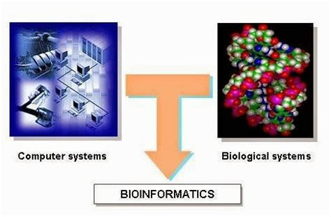
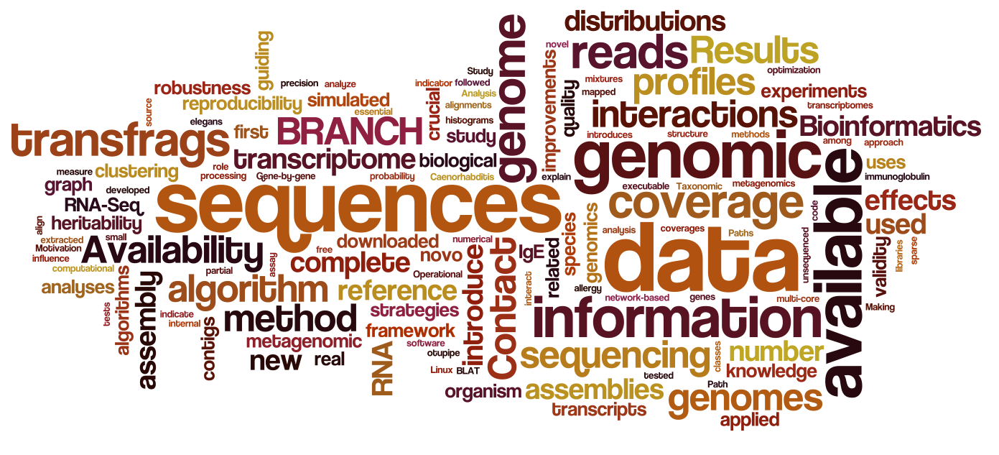
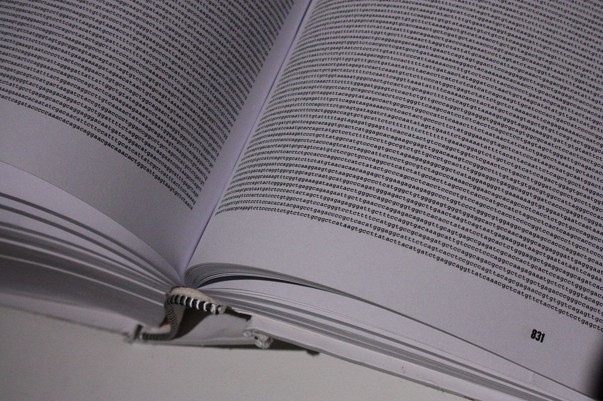
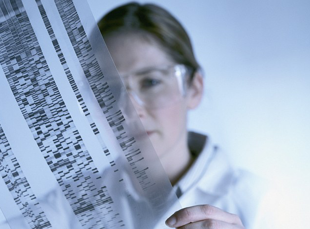

简介
生物信息学(Bioinformatics)是研究生物信息的采集、处理、存储、传播，分析和解释等各方面的学科， 也是生命科学和计算机科学相结合形成的一门新学科。它通过综合利用生物学、 计算机科学和信息技术而揭示大量而复杂的生物数据所赋有的生物学奥秘。

定义
一.生物信息学是一门收集、分析遗传数据以及分发给研究机构的新学科。
二.生物信息学特指数据库类的工作，包括持久稳固的在一个稳定的地方提供对数据的支持。
三.生物信息学是在大分子方面的概念型的生物学，并且使用了信息学的技术，这包括了从应用数学、计算机科学
以及统计学等学科衍生而来各种方法，并以此在大尺度上来理解和组织与生物大分子相关的信息。

经历阶段
1.前基因组时代（20世纪90年代前） 这一阶段主要是各种序列比较算法的建立、生物数据库的建立、检索工具的开发以及DNA和蛋白质序列分析等。
2.基因组时代（20世纪90年代后至2001年） 这一阶段主要是大规模的基因组测序，基因识别和发现，网络数据库系统地建立和交互界面工具的开发等。
3.后基因组时代（2001至今） 随着人类基因组测序工作的完成，各种模式生物基因组测序的完成，
生物科学的发展已经进入了后基因组时代，基因组学研究的重心由基因组的结构向基因的功能转移。
这种转移的一个重要标志是产生了功能基因组学，而基因组学的前期工作相应地被称为结构基因组学。

发展简介
生物信息学是建立在分子生物学的基础上的，因此，要了解生物信息学，就必须先对分子生物学的发展有一个简单的了解。 它的研究目标是揭示"基因组信息结构的复杂性及遗传语言的根本规律"，解释生命的遗传语言。 生物信息学已成为整个生命科学发展的重要组成部分，成为生命科学研究的前沿。
